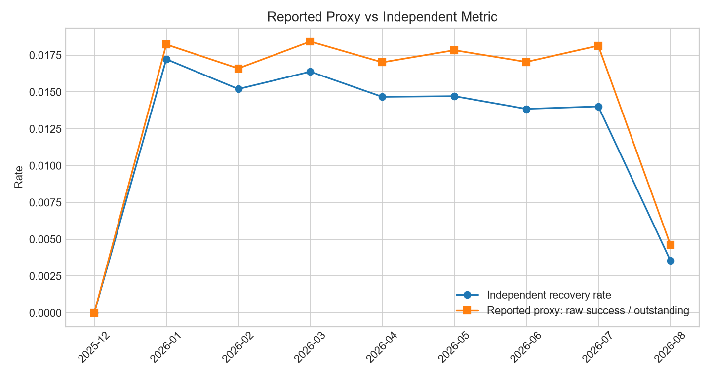
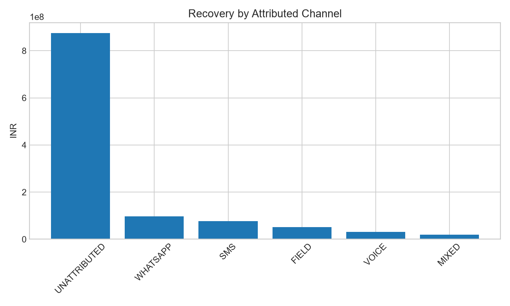

Observation period: 2024-01-01 00:02:27 to 2026-09-06 21:23:52. 2026-08 is treated as complete based on supplied event dates.


WhatsApp/digital engagement
| Metric | Value |
|---|---|
| Expected incremental recovery | INR 114,968,223 |
| ROI | 1.15x |
| Break-even recovery required | INR 100,000,000 |
| Confidence | MEDIUM |
Cost/uplift values are modeled assumptions because actual cost records are unavailable.